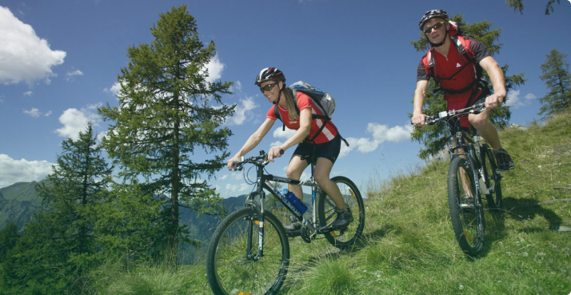

Основные причины выбрать велоспорт
Велоспорт — это основа здорового образа жизни для людей любого
пола и возраста.
Спорт и, в частности, велоспорт — это отличное средство для
снятия напряжения и стресса, борьбы с депрессией и поддержания
себя в хорошей физической форме. Почему? Сейчас расскажем!

Прогулка на велосипеде — это отличная зарядка для вашей сердечно-сосудистой системы, которая положительно сказывается на всем вашем здоровье.
Сердце — это тоже мышца, и когда вы даете ей нагрузку, она укрепляется и работает более эффективно. Чем вы здоровее, тем лучше снабжаются кровью внутренние органы.
Когда вы занимаетесь спортом, частота пульса меняется в периоды нагрузки и отдыха, а мышцы, которые вы нагружаете во время занятий, менее подвержены травмам и меньше болят от повседневных действий.
Полезен для здоровья
Ежедневные занятия велоспортом также снижают риск диабета, так как физическая нагрузка позволяет лучше контролировать уровень инсулина. Примечание: если для вас это актуально, обязательно берите с собой что-то сладкое (сахар, желе) и/или небольшой перекус.
Поднимает настроение и борется с сезонной депрессией
Проще говоря, когда вы едете на велосипеде, вы забываете о своих беспокойствах. Физическая нагрузка действует как настоящий естественный антидепрессант. Настроение поднимает кислород, в большом количестве поступающий в организм во время тренировки, и сама физическая нагрузка.
Особенно это актуально зимой, когда возрастает риск сезонной депрессии. Эта форма депрессии хорошая известна жителям Скандинавии, но встречается и в других странах. Она вызвана недостатком солнечного света. Зимой дни короче, солнца меньше, а погода – совершенно непредсказуема. Все это может повлиять на ваше самочувствие и настроение.
Велоспорт для снижения веса
Будем честны: для того, чтобы похудеть или поддерживать постоянный вес, одного раза на велосипеде будет недостаточно. Результата можно добиться, только занимаясь регулярно и часто, постепенно наращивая уровень сложности.
Велоспорт — это тренировка на выносливость, но не только. Во время занятий сжигаются калории и жир. Но, конечно, вам необходимо следить за питанием. Правил правильного питания не так много, просто следуйте им и поддерживайте стабильный вес!
Спорт, в частности, велоспорт — это основа здорового образа жизни. Если вы еще не пробовали кататься на велосипеде, начните в этом году! И не забудьте поделиться с нами своими впечатлениями.